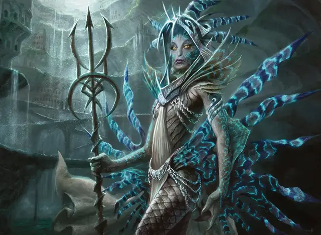

Зегана
Zegana
Средний Гуманоид (Мерфолк), законно-нейтральный, именной НИП

Класс Доспеха 16 (природный доспех)
Хиты 130 (20к8 + 40)
Скорость 30 футов, плавая 40 футов
| мод | спас | ||
|---|---|---|---|
| СИЛ | 11 | +0 | +0 |
| ЛОВ | 14 | +2 | +2 |
| ТЕЛ | 14 | +2 | +2 |
| мод | спас | ||
|---|---|---|---|
| ИНТ | 20 | +5 | +10 |
| МДР | 18 | +4 | +9 |
| ХАР | 16 | +3 | +3 |
Навыки Восприятие +9, Природа +10, Проницательность +9
Сопротивление урону холод, яд
Чувства тёмное зрение 60 футов, пассивное Восприятие 19
Языки Общий, Мерфолк, Эльфийский
Опасность 16 (15000 опыта)
Бонус мастерства +5
Особенности
Амфибия. Зегана может дышать и воздухом и под водой.
Легендарное сопротивление (3/день). . Если Зегана проваливает спасбросок, она может вместо этого сделать спасбросок успешным.
Сопротивление магии. Зегана совершает с преимуществом спасброски от заклинаний и прочих магических эффектов.
Использование заклинаний. Зегана является заклинателем Симиков 15-го уровня. Её базовой характеристикой является Интеллект (Сл спасброска от заклинания 18, +10 к попаданию атаками заклинаниями). У неё подготовлены следующие заклинания волшебника:
• Заговоры (неограниченно): искусство друидов [druidcraft], брызги кислоты [acid splash], луч холода [ray of frost], формование воды [shape water];
• 1 уровень (4 ячейки): поспешное отступление [expeditious retreat], сверкающие брызги [color spray], туманное облако [fog cloud], щит [shield];
• 2 уровень (3 ячейки): увеличение/уменьшение [enlarge/reduce], порыв ветра [gust of wind];
• 3 уровень (3 ячейки): замедление [slow], контрзаклинание [counterspell], полёт [fly];
• 4 уровень (3 ячейки): власть над водами [control water], град [ice storm], превращение [polymorph];
• 5 уровень (2 ячейки): призыв элементаля [conjure elemental], сотворение [creation];
• 6 уровень (1 ячейка): движение почвы [move earth], ледяная стена [wall of ice];
• 7 уровень (1 ячейка): радужные брызги [prismatic spray], телепортация [teleport];
• 8 уровень (1 ячейка): власть над погодой [control weather], подчинение чудовища [dominate monster].
Черты Зеганы.
Идеал:. "Закономерности природы это план того, как стать лучше."
Привязанность:. "Я использую все мои ресурсы, чтобы увидеть, как Равника станет лучше. чем когда-либо."
Слабость. : "Я не понимаю, как прогресс может быть неправильной целью."
Действия
Трезубец первого оратора. Рукопашная или дальнобойная атака оружием: +10 к попаданию, дистанция 5 футов или 20/60 футов, одна цель. Попадание: 12 (2к6) колющего урона, и трезубец создаёт громовой разряд. Все существа в кубе с ребром 15 футов от зубцов трезубца должны преуспеть в спасброске Телосложения Сл 18. Существо получает урон звуком 9 (2к8) при провале, и его отталкивает на 10 футов от Зеганы. Если существо под водой, урон увеличивается до 13 (3к8). При успехе существо получает половину этого урона и не отталкивается.
Потоп (Перезарядка 4-6). Зегана призывает водяную волну, которая обрушивается в место в 120 футах от неё. Волна может быть до 30 футов в длину, 10 футов в ширину и 10 футов в высоту. Каждое существо, попавшее в волне, должно совершить спасбросок Ловкости Сл 18. При провале, существо получает 18 (4к8) дробящего урона и падает ничком. При успехе существо получает половину этого урона и не падает ничком. Вода распространяется по земле, туша незащищённые огни, а потом исчезает.
Легендарные действия
Зегана может совершить 3 легендарных действия, выбирая из представленных ниже вариантов. За один раз можно использовать только одно легендарное действие, и только в конце хода другого существа. Зегана восстанавливает использованные легендарные действия в начале своего хода.
Приспосабливающаяся кожа. Зегана получает сопротивление урону кислотой, огнём, электричеством или звуком до начала своего следующего хода.
Трезубец. Зегана совершает одну рукопашную атаку трезубцем главного оратора.
Увеличение (стоит 2 действия). Зегана накладывает увеличение/уменьшение [enlarge/reduce] на себя, выбирая увеличение и не расходуя ячеек заклинаний.
Потоп (стоит 3 действия). Зегана использует Потоп, если может.
Описание
Главный оракул Зегана является мерфолком и лидером Объединения Симик. она поддерживает традиционные пути гильдии и её утопичную философию, которая представляет идеальный мир, в котором природа и цивилизация сосуществуют в равновесии. Некоторые члены гильдии, особенно фракция Адаптационистов, считают. что её методы устарели и гильдии нужно более практичное лидерство. Зегана отвечает, что она служит как главный оратор только из попустительства Комнаты Ораторов, и если другие ораторы хотят её заменить, у них на это есть полное право.